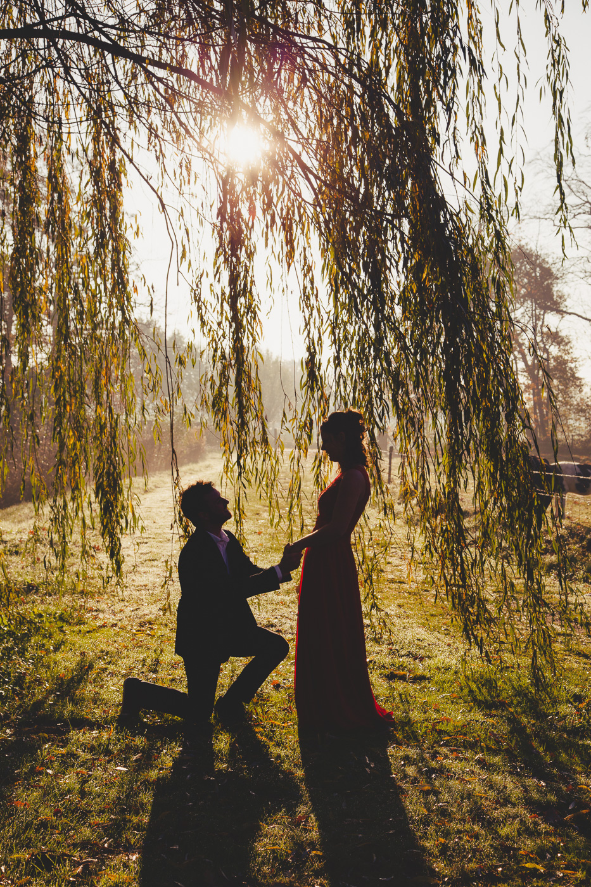

Gallerij





About
Mijn naam is Kimberley Gruwé
en samen met mijn man Yvo Daenekint
hebben we in 2014 K&Y Photography opgericht
Nieuwsgierig naar de kunst en passie die schuilt achter elke klik van mijn camera?
Welkom op mijn nieuwe online portfolio!
Als gepassioneerde fotograaf met een decennium ervaring in het vastleggen van de meest intieme en vreugdevolle momenten,
nodig ik je uit om te verdwalen in mijn visuele verhalen.
Van de tederheid van een pasgeboren baby tot de magie van een huwelijksdag,
mijn lens vangt de kostbare emoties en herinneringen die voor altijd gekoesterd zullen worden.
Voel je thuis, bekijk mijn werk en laat je betoveren door de tijdloze beelden die ik met liefde heb gecreëerd.
Welkom in mijn wereld van fotografie.
wij doen fotoshoots op locatie en bij ons in de fotostudio.
Spreekt mijn stijl jou aan of wens je meer informatie?
Neem gerust contact op met ons.
Vanuit Koekelare leggen we momenten vast die echt aanvoelen: liefde, connectie, kleine details en spontane emoties.

Cadeaubon
Geef een moment om nooit te vergeten cadeau
Op zoek naar een origineel en persoonlijk cadeau? Met onze cadeaubon voor een fotoshoot geef je niet zomaar een cadeau, maar een mooie herinnering die voor altijd bewaard blijft.
Of het nu gaat om een zwangerschapsshoot, gezinsshoot, newbornsessie, koppelshoot of gewoon een gezellige fotoshoot samen: met onze cadeaubon geef je iemand de kans om Mooie momenten vast te leggen en te genieten van een fijne ervaring voor de camera.
Een uniek cadeau voor een verjaardag, huwelijk, babyborrel, communie, jubileum of gewoon zomaar.
geef herinneringen cadeau. Geef een fotoshoot cadeau.
Wil je iemand verrassen met een cadeaubon? Neem gerust contact met ons op en we zorgen voor een mooi exemplaar!
Contact
Bij vragen of interesse neem gerust contact.
GSM: +32 478 75 10 65
Of stuur ons gerust een mail via onderstaand formulier